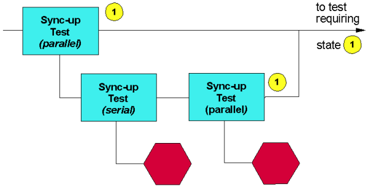

Match Loops for Syncing - Alternative Strategy
The figure below shows an alternative way of minimizing potential problems with match loops (sync-up tests) executed in parallel.

The sync-up test performed in parallel at the beginning of the flow assumes that the probability of devices passing the match loop is high. If a test does fail, however, a serial sync-up test is performed on all sites (and any failing devices binned accordingly), followed by a parallel test so that devices are in the correct state for the subsequent test.
Note A point worth noting is that these strategies so far assume the device will fail
the match condition of a match loop. However, it is also possible that the device passes the
match, but fails in some of the setup vectors surrounding a match loop. If this is of concern,
the following section offers a solution.
Functional changes
- Introduced before SmarTest 6.3.2